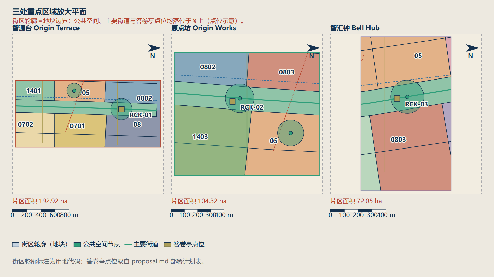
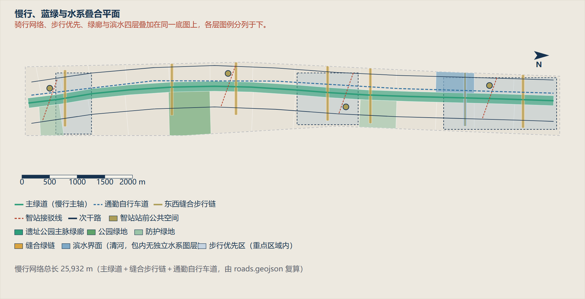

范围与重点区均采用组织方发布的临时粗略替代边界（provisional），仅为概念建议，不得作为正式红线、审批依据或精确面积依据；官方 polygon 发布后须整体重算。
总览地图 一脉三台两翼双缝的总体空间结构
众智园AI自主创新加速区 北京AI原点社区 大钟寺AI产业聚集区 大钟寺智站四象限厅 大钟寺智站四象限厅 智汇钟·算力之钟 智汇钟·算力之钟 知春智站服务厅 知春智站服务厅 原点碑·开源贡献原点 原点碑·开源贡献原点 五道口智站活力厅 五道口智站活力厅 赶考门·AI赶考驿站 赶考门·AI赶考驿站 清河智站站前厅 清河智站站前厅 人字台·自主创新纪念台 人字台·自主创新纪念台 N → 总体设计范围总览平面 总体设计范围总览平面 范围、用地、绿地与三处重点区域均由本包 geometry/ 图层投影生成；边界为组织方临时粗略范围，不作红线依据。 京张遗址公园主脉绿廊 清河滨水低碳创新廊 北段铁路界面防护绿地 小月河场景赋能翼绿地 南段防护绿地 众智园东西缝合绿链 清河站前缝合绿链 清华园车站缝合绿链 原点社区缝合绿链 知春路缝合绿链 小月河翼缝合绿链 大钟寺四象限缝合绿链 京张向上主绿道 众智园东西缝合绿链步行连接 清河站前缝合绿链步行连接 清华园车站缝合绿链步行连接 原点社区缝合绿链步行连接 知春路缝合绿链步行连接 小月河翼缝合绿链步行连接 大钟寺四象限缝合绿链步行连接 西侧科技服务次干路 东侧场景赋能次干路 清河智站接驳线 五道口智站接驳线 知春智站接驳线 大钟寺智站接驳线 智脉西侧通勤自行车道 众智园AI自主创新加速区 智源台 193 ha 北京AI原点社区 原点坊 104 ha 大钟寺AI产业聚集区 智汇钟 72 ha 0 500 1000 1500 2000 m N 总体设计范围（临时粗略） 重点区域 遗址公园主脉绿廊 主绿道（慢行主轴） 通勤自行车道 东西缝合步行链 次干路 智站接驳线 朝圣地标 总体设计范围面积: 11.35 km2 | 按 metrics.json site_area_sqm 复算一致 图纸为城市设计示意，不构成法定控制或工程结论；数值口径见 proposal.md 与 metrics.json。
三层范围 统筹研究、总体设计、重点区域的三层工作框架
统筹研究范围 约 43.6 km² 战略 · 产业 · 形态 总体设计范围 11.41 km² 结构 · 用地 · 更新 · 设施 重点区域 3 处 约 369.3 ha 街坊 · 建筑 · 场景 重点区域 智源台、原点坊、智汇钟三处详细设计片区
众智园AI自主创新加速区 众智园AI自主创新加速区 北京AI原点社区 北京AI原点社区 大钟寺AI产业聚集区 大钟寺AI产业聚集区 
人字台 1909 自主原点
詹天佑人字形展线，自主创新纪念台
赶考门 1949 赶考原点
清华园车站，技术自主是一场常考常新的赶考
算力之钟 1980 创新原点
大钟寺意象，实时可视化算力负载与绿电占比
原点碑 2026 AI原点
开源贡献者荣誉碑，让贡献被城市记住
三处重点区域放大平面 三处重点区域放大平面 街区轮廓＝地块边界；公共空间、主要街道与答卷亭点位均落位于图上（点位示意）。 京张遗址公园文化创新主脉 · 1401 智源台·全栈自主创新核 · 0802 智源台·标准与安全治理院 · 08 清河智站TOD服务核 · 05 众智园人才社区 · 0701 清河滨水低碳创新廊 · 1401 众智园社区服务核 · 0702 安宁庄智造转化坊 · 0802 北段留白创新预留区 · 16 清华园车站文化原点 · 0803 北段铁路界面防护绿地 · 1402 原点坊·开源发布厅 · 0803 五道口智站混合活力街区 · 05 原点坊·近校孵化街区 · 0802 原点广场与荣誉展示带 · 1403 东升科教协同更新区 · 0804 中段人才公寓组团 · 0701 知春智站科技服务核 · 05 学院路科研机构协同区 · 0802 中段体育健康活力园 · 0805 小月河场景赋能翼绿地 · 1401 北三环城市服务更新带 · 05 中段社区生活圈更新区 · 0701 AI医疗健康服务区 · 0806 蓟门文化教育协同区 · 0804 智汇钟·智能原生消费核 · 05 大钟寺文化与算力之钟 · 0803 大钟寺智站一体化枢纽区 · 05 南段防护绿地 · 1402 京张门户广场 · 1403 西直门门户商务服务区 · 05 京张向上主绿道 众智园东西缝合绿链步行连接 清河站前缝合绿链步行连接 清华园车站缝合绿链步行连接 原点社区缝合绿链步行连接 知春路缝合绿链步行连接 小月河翼缝合绿链步行连接 大钟寺四象限缝合绿链步行连接 西侧科技服务次干路 东侧场景赋能次干路 清河智站接驳线 五道口智站接驳线 知春智站接驳线 大钟寺智站接驳线 智脉西侧通勤自行车道 原点广场与荣誉展示带 京张门户广场 人字台·自主创新纪念台 赶考门·AI赶考驿站 智汇钟·算力之钟 原点碑·开源贡献原点 清河智站站前厅 五道口智站活力厅 知春智站服务厅 大钟寺智站四象限厅 小月河场景客厅 京张门户广场南厅 0802 08 05 0701 1401 0702 RCK-01 智源台 Origin Terrace 片区面积 192.92 ha 0 200 400 600 800 m N 京张遗址公园文化创新主脉 · 1401 智源台·全栈自主创新核 · 0802 智源台·标准与安全治理院 · 08 清河智站TOD服务核 · 05 众智园人才社区 · 0701 清河滨水低碳创新廊 · 1401 众智园社区服务核 · 0702 安宁庄智造转化坊 · 0802 北段留白创新预留区 · 16 清华园车站文化原点 · 0803 北段铁路界面防护绿地 · 1402 原点坊·开源发布厅 · 0803 五道口智站混合活力街区 · 05 原点坊·近校孵化街区 · 0802 原点广场与荣誉展示带 · 1403 东升科教协同更新区 · 0804 中段人才公寓组团 · 0701 知春智站科技服务核 · 05 学院路科研机构协同区 · 0802 中段体育健康活力园 · 0805 小月河场景赋能翼绿地 · 1401 北三环城市服务更新带 · 05 中段社区生活圈更新区 · 0701 AI医疗健康服务区 · 0806 蓟门文化教育协同区 · 0804 智汇钟·智能原生消费核 · 05 大钟寺文化与算力之钟 · 0803 大钟寺智站一体化枢纽区 · 05 南段防护绿地 · 1402 京张门户广场 · 1403 西直门门户商务服务区 · 05 京张向上主绿道 众智园东西缝合绿链步行连接 清河站前缝合绿链步行连接 清华园车站缝合绿链步行连接 原点社区缝合绿链步行连接 知春路缝合绿链步行连接 小月河翼缝合绿链步行连接 大钟寺四象限缝合绿链步行连接 西侧科技服务次干路 东侧场景赋能次干路 清河智站接驳线 五道口智站接驳线 知春智站接驳线 大钟寺智站接驳线 智脉西侧通勤自行车道 原点广场与荣誉展示带 京张门户广场 人字台·自主创新纪念台 赶考门·AI赶考驿站 智汇钟·算力之钟 原点碑·开源贡献原点 清河智站站前厅 五道口智站活力厅 知春智站服务厅 大钟寺智站四象限厅 小月河场景客厅 京张门户广场南厅 0803 05 0802 1403 RCK-02 原点坊 Origin Works 片区面积 104.32 ha 0 100 200 300 400 m N 京张遗址公园文化创新主脉 · 1401 智源台·全栈自主创新核 · 0802 智源台·标准与安全治理院 · 08 清河智站TOD服务核 · 05 众智园人才社区 · 0701 清河滨水低碳创新廊 · 1401 众智园社区服务核 · 0702 安宁庄智造转化坊 · 0802 北段留白创新预留区 · 16 清华园车站文化原点 · 0803 北段铁路界面防护绿地 · 1402 原点坊·开源发布厅 · 0803 五道口智站混合活力街区 · 05 原点坊·近校孵化街区 · 0802 原点广场与荣誉展示带 · 1403 东升科教协同更新区 · 0804 中段人才公寓组团 · 0701 知春智站科技服务核 · 05 学院路科研机构协同区 · 0802 中段体育健康活力园 · 0805 小月河场景赋能翼绿地 · 1401 北三环城市服务更新带 · 05 中段社区生活圈更新区 · 0701 AI医疗健康服务区 · 0806 蓟门文化教育协同区 · 0804 智汇钟·智能原生消费核 · 05 大钟寺文化与算力之钟 · 0803 大钟寺智站一体化枢纽区 · 05 南段防护绿地 · 1402 京张门户广场 · 1403 西直门门户商务服务区 · 05 京张向上主绿道 众智园东西缝合绿链步行连接 清河站前缝合绿链步行连接 清华园车站缝合绿链步行连接 原点社区缝合绿链步行连接 知春路缝合绿链步行连接 小月河翼缝合绿链步行连接 大钟寺四象限缝合绿链步行连接 西侧科技服务次干路 东侧场景赋能次干路 清河智站接驳线 五道口智站接驳线 知春智站接驳线 大钟寺智站接驳线 智脉西侧通勤自行车道 原点广场与荣誉展示带 京张门户广场 人字台·自主创新纪念台 赶考门·AI赶考驿站 智汇钟·算力之钟 原点碑·开源贡献原点 清河智站站前厅 五道口智站活力厅 知春智站服务厅 大钟寺智站四象限厅 小月河场景客厅 京张门户广场南厅 05 0803 RCK-03 智汇钟 Bell Hub 片区面积 72.05 ha 0 100 200 300 400 m N 街区轮廓（地块） 公共空间节点 主要街道 答卷亭点位 街区轮廓标注为用地代码；答卷亭点位取自 proposal.md 部署计划表。 图纸为城市设计示意，不构成法定控制或工程结论；数值口径见 proposal.md 与 metrics.json。
用地分区 以 30 个锚点服务域完整划分，无缝隙无重叠
京张遗址公园文化创新主脉 · 1401 · 172.3 ha 智源台·全栈自主创新核 · 0802 · 31.0 ha 智源台·标准与安全治理院 · 08 · 45.7 ha 清河智站TOD服务核 · 05 · 26.1 ha 众智园人才社区 · 0701 · 38.0 ha 清河滨水低碳创新廊 · 1401 · 25.7 ha 众智园社区服务核 · 0702 · 35.9 ha 安宁庄智造转化坊 · 0802 · 27.5 ha 北段留白创新预留区 · 16 · 36.5 ha 清华园车站文化原点 · 0803 · 26.2 ha 北段铁路界面防护绿地 · 1402 · 33.4 ha 原点坊·开源发布厅 · 0803 · 22.4 ha 五道口智站混合活力街区 · 05 · 29.3 ha 原点坊·近校孵化街区 · 0802 · 23.1 ha 原点广场与荣誉展示带 · 1403 · 35.1 ha 东升科教协同更新区 · 0804 · 27.6 ha 中段人才公寓组团 · 0701 · 50.5 ha 知春智站科技服务核 · 05 · 27.0 ha 学院路科研机构协同区 · 0802 · 57.2 ha 中段体育健康活力园 · 0805 · 25.0 ha 小月河场景赋能翼绿地 · 1401 · 59.0 ha 北三环城市服务更新带 · 05 · 27.5 ha 中段社区生活圈更新区 · 0701 · 58.5 ha AI医疗健康服务区 · 0806 · 26.4 ha 蓟门文化教育协同区 · 0804 · 45.6 ha 智汇钟·智能原生消费核 · 05 · 24.9 ha 大钟寺文化与算力之钟 · 0803 · 33.2 ha 大钟寺智站一体化枢纽区 · 05 · 21.0 ha 南段防护绿地 · 1402 · 21.7 ha 京张门户广场 · 1403 · 14.3 ha 西直门门户商务服务区 · 05 · 13.9 ha
用地分类与规模 代码 名称 面积（公顷） 占比 1401 公园绿地 257.1 22.5% 05 商业服务业用地 169.7 14.9% 0701 城镇住宅用地 147.0 12.9% 0802 科研用地 138.7 12.2% 0803 文化用地 81.8 7.2% 0804 教育用地 73.1 6.4% 1402 防护绿地 55.1 4.8% 1403 广场用地 49.4 4.3% 08 公共管理与公共服务用地 45.7 4.0% 16 留白用地 36.5 3.2% 0702 城镇社区服务设施用地 35.9 3.1% 0806 医疗卫生用地 26.4 2.3% 0805 体育用地 25.0 2.2%
用地结构平面（街区级） 用地结构平面（街区级） 31 个地块按用地代码着色，图例与面积统计均由 land_use.geojson 复算。 京张遗址公园文化创新主脉 · 1401 · 172.3 ha 智源台·全栈自主创新核 · 0802 · 31.0 ha 智源台·标准与安全治理院 · 08 · 45.7 ha 清河智站TOD服务核 · 05 · 26.1 ha 众智园人才社区 · 0701 · 38.0 ha 清河滨水低碳创新廊 · 1401 · 25.7 ha 众智园社区服务核 · 0702 · 35.9 ha 安宁庄智造转化坊 · 0802 · 27.5 ha 北段留白创新预留区 · 16 · 36.5 ha 清华园车站文化原点 · 0803 · 26.2 ha 北段铁路界面防护绿地 · 1402 · 33.4 ha 原点坊·开源发布厅 · 0803 · 22.4 ha 五道口智站混合活力街区 · 05 · 29.3 ha 原点坊·近校孵化街区 · 0802 · 23.1 ha 原点广场与荣誉展示带 · 1403 · 35.1 ha 东升科教协同更新区 · 0804 · 27.6 ha 中段人才公寓组团 · 0701 · 50.5 ha 知春智站科技服务核 · 05 · 27.0 ha 学院路科研机构协同区 · 0802 · 57.2 ha 中段体育健康活力园 · 0805 · 25.0 ha 小月河场景赋能翼绿地 · 1401 · 59.0 ha 北三环城市服务更新带 · 05 · 27.5 ha 中段社区生活圈更新区 · 0701 · 58.5 ha AI医疗健康服务区 · 0806 · 26.4 ha 蓟门文化教育协同区 · 0804 · 45.6 ha 智汇钟·智能原生消费核 · 05 · 24.9 ha 大钟寺文化与算力之钟 · 0803 · 33.2 ha 大钟寺智站一体化枢纽区 · 05 · 21.0 ha 南段防护绿地 · 1402 · 21.7 ha 京张门户广场 · 1403 · 14.3 ha 西直门门户商务服务区 · 05 · 13.9 ha 0 500 1000 1500 2000 m N 公园绿地 商业服务业用地 城镇住宅用地 科研用地 文化用地 教育用地 防护绿地 广场用地 公共管理与公共服务用地 留白用地 城镇社区服务设施用地 医疗卫生用地 体育用地 用地面积统计（由 land_use.geojson 复算） 代码 用地类别 面积 (ha) 占比 1401 公园绿地 257.1 22.5% 05 商业服务业用地 169.7 14.9% 0701 城镇住宅用地 147.0 12.9% 0802 科研用地 138.7 12.2% 0803 文化用地 81.8 7.2% 0804 教育用地 73.1 6.4% 1402 防护绿地 55.1 4.8% 代码 用地类别 面积 (ha) 占比 1403 广场用地 49.4 4.3% 08 公共管理与公共服务用地 45.7 4.0% 16 留白用地 36.5 3.2% 0702 城镇社区服务设施用地 35.9 3.1% 0806 医疗卫生用地 26.4 2.3% 0805 体育用地 25.0 2.2% 合计 1141.3 ha (31 个地块) 图纸为城市设计示意，不构成法定控制或工程结论；数值口径见 proposal.md 与 metrics.json。
交通慢行 南北贯通主绿道与七条东西缝合步行链
京张遗址公园主脉绿廊 清河滨水低碳创新廊 北段铁路界面防护绿地 小月河场景赋能翼绿地 南段防护绿地 众智园东西缝合绿链 清河站前缝合绿链 清华园车站缝合绿链 原点社区缝合绿链 知春路缝合绿链 小月河翼缝合绿链 大钟寺四象限缝合绿链 原点广场与荣誉展示带 京张门户广场 人字台·自主创新纪念台 赶考门·AI赶考驿站 智汇钟·算力之钟 原点碑·开源贡献原点 清河智站站前厅 五道口智站活力厅 知春智站服务厅 大钟寺智站四象限厅 小月河场景客厅 京张门户广场南厅 京张向上主绿道 众智园东西缝合绿链步行连接 清河站前缝合绿链步行连接 清华园车站缝合绿链步行连接 原点社区缝合绿链步行连接 知春路缝合绿链步行连接 小月河翼缝合绿链步行连接 大钟寺四象限缝合绿链步行连接 西侧科技服务次干路 东侧场景赋能次干路 清河智站接驳线 五道口智站接驳线 知春智站接驳线 大钟寺智站接驳线 智脉西侧通勤自行车道

慢行、蓝绿与水系叠合平面 慢行、蓝绿与水系叠合平面 骑行网络、步行优先、绿廊与滨水四层叠加在同一底图上，各层图例分列于下。 众智园AI自主创新加速区 北京AI原点社区 大钟寺AI产业聚集区 京张遗址公园主脉绿廊 清河滨水低碳创新廊 北段铁路界面防护绿地 小月河场景赋能翼绿地 南段防护绿地 众智园东西缝合绿链 清河站前缝合绿链 清华园车站缝合绿链 原点社区缝合绿链 知春路缝合绿链 小月河翼缝合绿链 大钟寺四象限缝合绿链 京张向上主绿道 · 9574 m 众智园东西缝合绿链步行连接 · 963 m 清河站前缝合绿链步行连接 · 971 m 清华园车站缝合绿链步行连接 · 999 m 原点社区缝合绿链步行连接 · 990 m 知春路缝合绿链步行连接 · 956 m 小月河翼缝合绿链步行连接 · 938 m 大钟寺四象限缝合绿链步行连接 · 1026 m 西侧科技服务次干路 · 9517 m 东侧场景赋能次干路 · 9517 m 清河智站接驳线 · 797 m 五道口智站接驳线 · 797 m 知春智站接驳线 · 798 m 大钟寺智站接驳线 · 798 m 智脉西侧通勤自行车道 · 9515 m 0 500 1000 1500 2000 m N 主绿道（慢行主轴） 通勤自行车道 东西缝合步行链 智站接驳线 次干路 智站站前公共空间 遗址公园主脉绿廊 公园绿地 防护绿地 缝合绿链 滨水界面（清河，包内无独立水系图层） 步行优先区（重点区域内） 慢行网络总长 25,932 m（主绿道＋缝合步行链＋通勤自行车道，由 roads.geojson 复算） 图纸为城市设计示意，不构成法定控制或工程结论；数值口径见 proposal.md 与 metrics.json。
蓝绿公共空间 三级绿地系统与四处朝圣地标
京张遗址公园主脉绿廊 清河滨水低碳创新廊 北段铁路界面防护绿地 小月河场景赋能翼绿地 南段防护绿地 众智园东西缝合绿链 清河站前缝合绿链 清华园车站缝合绿链 原点社区缝合绿链 知春路缝合绿链 小月河翼缝合绿链 大钟寺四象限缝合绿链 原点广场与荣誉展示带 京张门户广场 人字台·自主创新纪念台 赶考门·AI赶考驿站 智汇钟·算力之钟 原点碑·开源贡献原点 清河智站站前厅 五道口智站活力厅 知春智站服务厅 大钟寺智站四象限厅 小月河场景客厅 京张门户广场南厅 京张向上主绿道 众智园东西缝合绿链步行连接 清河站前缝合绿链步行连接 清华园车站缝合绿链步行连接 原点社区缝合绿链步行连接 知春路缝合绿链步行连接 小月河翼缝合绿链步行连接 大钟寺四象限缝合绿链步行连接 西侧科技服务次干路 东侧场景赋能次干路 清河智站接驳线 五道口智站接驳线 知春智站接驳线 大钟寺智站接驳线 智脉西侧通勤自行车道 人字台 1909 自主原点
詹天佑人字形展线，自主创新纪念台
赶考门 1949 赶考原点
清华园车站，技术自主是一场常考常新的赶考
算力之钟 1980 创新原点
大钟寺意象，实时可视化算力负载与绿电占比
原点碑 2026 AI原点
开源贡献者荣誉碑，让贡献被城市记住
建筑 92 栋建筑轮廓的保留、改造、新建分类原则
智源台·全栈自主创新核·建筑组团1 · None 智源台·全栈自主创新核·建筑组团2 · None 智源台·全栈自主创新核·建筑组团3 · None 智源台·全栈自主创新核·建筑组团4 · None 智源台·标准与安全治理院·建筑组团1 · None 智源台·标准与安全治理院·建筑组团2 · None 智源台·标准与安全治理院·建筑组团3 · None 智源台·标准与安全治理院·建筑组团4 · None 清河智站TOD服务核·建筑组团1 · None 清河智站TOD服务核·建筑组团2 · None 清河智站TOD服务核·建筑组团3 · None 清河智站TOD服务核·建筑组团4 · None 众智园人才社区·建筑组团1 · None 众智园人才社区·建筑组团2 · None 众智园人才社区·建筑组团3 · None 众智园人才社区·建筑组团4 · None 众智园社区服务核·建筑组团1 · None 众智园社区服务核·建筑组团2 · None 众智园社区服务核·建筑组团3 · None 众智园社区服务核·建筑组团4 · None 安宁庄智造转化坊·建筑组团1 · None 安宁庄智造转化坊·建筑组团2 · None 安宁庄智造转化坊·建筑组团3 · None 安宁庄智造转化坊·建筑组团4 · None 清华园车站文化原点·建筑组团1 · None 清华园车站文化原点·建筑组团2 · None 清华园车站文化原点·建筑组团3 · None 清华园车站文化原点·建筑组团4 · None 原点坊·开源发布厅·建筑组团1 · None 原点坊·开源发布厅·建筑组团2 · None 原点坊·开源发布厅·建筑组团3 · None 原点坊·开源发布厅·建筑组团4 · None 五道口智站混合活力街区·建筑组团1 · None 五道口智站混合活力街区·建筑组团2 · None 五道口智站混合活力街区·建筑组团3 · None 五道口智站混合活力街区·建筑组团4 · None 原点坊·近校孵化街区·建筑组团1 · None 原点坊·近校孵化街区·建筑组团2 · None 原点坊·近校孵化街区·建筑组团3 · None 原点坊·近校孵化街区·建筑组团4 · None 东升科教协同更新区·建筑组团1 · None 东升科教协同更新区·建筑组团2 · None 东升科教协同更新区·建筑组团3 · None 东升科教协同更新区·建筑组团4 · None 中段人才公寓组团·建筑组团1 · None 中段人才公寓组团·建筑组团2 · None 中段人才公寓组团·建筑组团3 · None 中段人才公寓组团·建筑组团4 · None 知春智站科技服务核·建筑组团1 · None 知春智站科技服务核·建筑组团2 · None 知春智站科技服务核·建筑组团3 · None 知春智站科技服务核·建筑组团4 · None 学院路科研机构协同区·建筑组团1 · None 学院路科研机构协同区·建筑组团2 · None 学院路科研机构协同区·建筑组团3 · None 学院路科研机构协同区·建筑组团4 · None 中段体育健康活力园·建筑组团1 · None 中段体育健康活力园·建筑组团2 · None 中段体育健康活力园·建筑组团3 · None 中段体育健康活力园·建筑组团4 · None 北三环城市服务更新带·建筑组团1 · None 北三环城市服务更新带·建筑组团2 · None 北三环城市服务更新带·建筑组团3 · None 北三环城市服务更新带·建筑组团4 · None 中段社区生活圈更新区·建筑组团1 · None 中段社区生活圈更新区·建筑组团2 · None 中段社区生活圈更新区·建筑组团3 · None 中段社区生活圈更新区·建筑组团4 · None AI医疗健康服务区·建筑组团1 · None AI医疗健康服务区·建筑组团2 · None AI医疗健康服务区·建筑组团3 · None AI医疗健康服务区·建筑组团4 · None 蓟门文化教育协同区·建筑组团1 · None 蓟门文化教育协同区·建筑组团2 · None 蓟门文化教育协同区·建筑组团3 · None 蓟门文化教育协同区·建筑组团4 · None 智汇钟·智能原生消费核·建筑组团1 · None 智汇钟·智能原生消费核·建筑组团2 · None 智汇钟·智能原生消费核·建筑组团3 · None 智汇钟·智能原生消费核·建筑组团4 · None 大钟寺文化与算力之钟·建筑组团1 · None 大钟寺文化与算力之钟·建筑组团2 · None 大钟寺文化与算力之钟·建筑组团3 · None 大钟寺文化与算力之钟·建筑组团4 · None 大钟寺智站一体化枢纽区·建筑组团1 · None 大钟寺智站一体化枢纽区·建筑组团2 · None 大钟寺智站一体化枢纽区·建筑组团3 · None 大钟寺智站一体化枢纽区·建筑组团4 · None 西直门门户商务服务区·建筑组团1 · None 西直门门户商务服务区·建筑组团2 · None 西直门门户商务服务区·建筑组团3 · None 西直门门户商务服务区·建筑组团4 · None
更新项目 公共先行、锚点带动的三期实施安排
近期 2026-2028：原点起势 中期 2029-2031：中段织补 远期 2032-2035：门户焕新 一期 2026–2028 原点起势
主脉北段贯通、开源发布厅、人字台、首批场景开放清单
二期 2029–2031 中段织补
缝合链建成、全栈街坊、算力之钟、青年住房
三期 2032–2035 门户焕新
站城一体、南段门户、全带活动体系常态化
AI 场景 12 张场景卡、6 类人才画像、4 类产业测试
十二张 AI+ 场景卡 AI 慢行导航与无障碍路径推荐 遗址公园多语种智能体导览 企业服务副驾一站办 城市运行体检与公共安全复盘 社区 AI 惠民服务点 开源模型公共评测与榜单 自动驾驶与无人配送开放测试 算力负载与绿电可视化 青年人才落地服务智能体 校地科研数据合规撮合 智能巡检与设施预测性维护 数字素养与 AI 通识课堂 六类人才画像 核心指标 由几何复算的 30 项 known 指标
核心指标（全部由 geometry/ 图层在 EPSG:4548 下复算）
heritage_spine_length_m
9.57km
building_coverage_ratio
7.29%
slow_mobility_network_length_m
25.93km
key_area_total_area_sqm
369.3ha
green_space_area_sqm
336.6ha
public_space_area_sqm
84.7ha
research_land_area_sqm
138.7ha
commercial_service_land_area_sqm
169.7ha
residential_land_area_sqm
147.0ha
reserved_land_area_sqm
36.5ha
building_footprint_count
92
building_footprint_area_sqm
83.2ha
road_centreline_length_m
48.16km
heritage_spine_area_sqm
172.3ha
land_use_total_area_sqm
1,141.3ha
phase_one_area_sqm
514.9ha
ai_public_space_node_count
10
constraint_feature_count
4
industry_test_scenario_count
4
pilgrimage_landmark_count
4
任务覆盖 公告 17 项任务与 agent.1–agent.6 的覆盖情况
任务 名称 覆盖 1.3.1 构建世界级AI创新生态体系 已覆盖 1.3.2 建设适配AI新质生产力的新型城市形态 已覆盖 1.3.3 打造全球AI创新人才向往的高品质城区 已覆盖 1.4.1 统筹研究范围 已覆盖 1.4.2 总体设计范围 已覆盖 1.4.3 重点区域范围 已覆盖 1.5.1.1 统筹研究范围：AI创新生态体系 已覆盖 1.5.1.2 统筹研究范围：适配人工智能的未来城市形态 已覆盖 1.5.2.1 总体设计范围：产业目标与功能布局 已覆盖 1.5.2.2 总体设计范围：城市更新总体框架 已覆盖 1.5.2.3 总体设计范围：交通轨道市政配套设施 已覆盖 1.5.2.4 总体设计范围：京张遗址公园活力带 已覆盖 1.5.2.5 总体设计范围：城市风貌 已覆盖 1.5.3.required 重点区域范围详细设计必选项 已覆盖 1.5.3.1 众智园AI自主创新加速区 已覆盖 1.5.3.2 北京AI原点社区 已覆盖 1.5.3.3 大钟寺AI产业聚集区 已覆盖 agent.1 一带总体概念与功能统筹方案设计 已覆盖 agent.2 AI全栈自主创新体系与世界级AI创新生态设计 已覆盖 agent.3 AI+场景赋能新范式与智能化AI活力城市设计 已覆盖 agent.4 AI公共空间、智能原生新业态与朝圣地标设计 已覆盖 agent.5 百年京张文化、中关村文化与AI新文化融合叙事设计 已覆盖 agent.6 一带全球AI创新活动体系与长期运营设计 已覆盖
自检状态 拓扑、边界可信度与证据完整性自检
拓扑校验 检查项 结果 容差 用地覆盖缺口 0.31 m² ≤ 1141 m² 地块间最大重叠 0.02 m² ≤ 1.00 m² 重点区标识完整性 3 / 3 必须 边界可信度标注 provisional 已标注 必须
自检结果 检查项 结果 等级 内容 DETERMINISTIC_VALIDATION pass blocking deterministic_validation: PASS SPATIAL_REVIEW pass blocking spatial_review: PASS VISUAL_PACKAGING pass blocking visual_review: PASS PROFESSIONAL_EVIDENCE pass blocking professional_review: PASS
来源 全部依据的登记与用途边界
来源 位置 类型 SITE-PACKAGE brief/site-package/ official_public SOURCE-REGISTRY data/source_registry.json repository_public_registry PROCESSED-FACT-PACK data/processed/agent_fact_pack.md repository_processed_reference BOUNDARY-SOURCE brief/site-package/geometry/provisional_boundaries.geojson agent_inferred_from_public_data KEY-AREA-SOURCE brief/site-package/geometry/provisional_boundaries.geojson agent_inferred_from_public_data OFFICIAL-ANNOUNCEMENT https://ghzrzyw.beijing.gov.cn/zhengwuxinxi/tzgg/hd/202605/t20260509_4643047.html official_public AGENT-TASKBOOK brief/site-package/agent_taskbook.json user_provided_cleared
假设 待专业确认的假设与复算触发条件
编号 状态 内容 A-CONTROLS-001 pending_professional_confirmation Detailed regulatory controls, road redlines, ownership, municipal utilities, and engineering constraints must be confirmed from official attachments before statutory use.
官方 SITE_BOUNDARY 与三处 KEY_AREA polygon 发布后，必须整体重跑几何生成、指标复算、图纸与本页生成。
智源台详设 众智园：街区形态、断面、公共空间与 AI 嵌入
全栈步行轴断面（ZZ-A—ZZ-B 段） 片区平面（示意，非红线） 复算：片区 192.92 ha ｜ 慢行 5,791 m ｜ 密度 30.0 m/ha ｜ 绿地率 29.9% 清河 · 滨水步道 约 12,000 m ZZ-D 滨水创新廊（混合） 覆盖率 ≤30% ZZ-C 标准治理院/国际交流 覆盖率 ≤35% 全栈步行轴 800 m（步行 3 分钟覆盖） 800 m ZZ-A 全栈研发（芯片/算力） 覆盖率 ≤45% ZZ-B 框架与模型研发 覆盖率 ≤40% ZZ-E 弹性留白用地 覆盖率 ≤20% 人字台广场 约 3,200 m² 全栈花园 约 1,800 m² 标准院中庭 约 900 m² RCK-01 自动驾驶测试路段 600×7.0 m AI 设施 端侧算力驿站 间距 200 m / 4 m² V2X 路侧单元 间距 120 m 0 100 200 300 400 m N 街区（含覆盖率上限） 慢行主轴 公共空间节点 答卷亭点位 水系 全栈步行轴断面（ZZ-A—ZZ-B 段） 设施带 2.0 人行道 4.0 自行车道(双向) 3.0 绿化隔离带 1.5 慢行车道 3.5 绿化隔离带 1.5 人行道 3.5 设施带 2.0 21.0 m 步行优先，无机动车主通道；服务车辆 ≤20 km/h，树冠覆盖 ≥70%。 边界为组织方临时粗略范围，仅概念建议，不作红线或精确面积依据。 图纸为城市设计示意，不构成法定控制或工程结论；数值口径见 proposal.md 与 metrics.json。
原点坊详设 AI原点社区：步行脊、口袋公园与边缘推理节点
原点社区主步行脊断面（YD-A—YD-C 段） 片区平面（示意，非红线） 复算：片区 104.32 ha ｜ 慢行 3,092 m ｜ 密度 29.6 m/ha ｜ 公共空间占比 34.4% 主步行脊 1,100 m（中央线性花园 4.0 m） 1,100 m YD-A 近校孵化街坊 覆盖率 ≤50% YD-C 开源发布厅与路演 覆盖率 ≤35% YD-B 开源社区住坊（青年租赁） 覆盖率 ≤45% YD-D 社区生活服务带 覆盖率 ≤40% YD-E 公共开放实验场 覆盖率 ≤15% YD-B 开源社区住坊（青年租赁） 覆盖率 ≤45% 赶考门广场 约 2,400 m² 发布厅前庭 约 1,600 m² 原点碑花园 约 1,200 m² 口袋公园 约 600 m² RCK-02 AI 设施 边缘推理节点 间距 150 m / 2.4 m²（地下） 杆载环境感知 间距 80 m / 高 6 m 自适应照明：≤5 人/分钟降至 30% 0 100 200 300 400 m N 街区（含覆盖率上限） 慢行主轴 公共空间节点 答卷亭点位 原点社区主步行脊断面（YD-A—YD-C 段） 退界绿带 3.0 人行道 3.5 自行车道(双向) 3.0 中央线性花园 4.0 自行车道(双向) 3.0 人行道 3.5 退界绿带 3.0 23.0 m 全段禁止社会机动车；自行车道彩色透水混凝土，中央花园含答卷亭。 图纸为城市设计示意，不构成法定控制或工程结论；数值口径见 proposal.md 与 metrics.json。
智汇钟详设 大钟寺：站城复合、遗产缓冲与算力之钟
智能原生商业街断面（DZ-C 段） 片区平面（示意，非红线） 复算：片区 72.05 ha ｜ 慢行 2,283 m ｜ 密度 31.7 m/ha ｜ 绿地率 30.2% 大钟寺站（13 号线） DZ-A 站城复合商业（上盖） 覆盖率 ≤55% DZ-E 站前公共厅与换乘 覆盖率 ≤30% DZ-B 数据要素与产业服务 覆盖率 ≤40% DZ-C 智能原生商业街坊 覆盖率 ≤45% DZ-D 文化遗产缓冲带 高度 ≤18 m ／覆盖率 ≤25% 遗产缓冲带退界 ≥12 m 视线通廊（保护大钟寺天际线） 算力之钟广场 约 2,800 m² 站前四象限步行厅 约 3,600 m² 大钟寺文化花园 约 2,000 m² RCK-03 AI 设施 算力之钟装置 25 m² / 高 8 m 商业街匿名客流感知 间距 25 m 无电时以阴刻铭牌展示答卷摘要 0 100 200 300 400 m N 街区（含覆盖率上限） 公共空间节点 答卷亭点位 遗产缓冲带退界 ≥12 m 智能原生商业街断面（DZ-C 段） 商业外摆 2.5 人行道 4.5 骑行道 2.0 绿化带(雨水花园) 2.0 公交/接驳道 3.5 绿化带 1.5 骑行道 2.0 人行道 3.5 商业外摆 2.5 24.0 m 公交＋慢行模式，禁止社会车辆；外摆区可移动，夜间收回释放步行空间。 图纸为城市设计示意，不构成法定控制或工程结论；数值口径见 proposal.md 与 metrics.json。
交通策略 分片区慢行网络、交叉口详图、站域接驳与停车上限
慢行网络与站域接驳（分片区） 慢行网络与站域接驳（分片区） 里程与密度为 geometry/ 图层复算值；断面与配时为概念建议 全带慢行网络 25,932 m（三片区合计 11,166 m） 智源台 慢行 5,791 m ｜ 30.0 m/ha 骑行 双向 3.0 m ｜ 绿带分隔 原点坊 慢行 3,092 m ｜ 29.6 m/ha 骑行 双向 3.0 m ｜ 花园分隔 智汇钟 慢行 2,283 m ｜ 31.7 m/ha 骑行 单向 2.0×2 ｜ 隔离柱 清河智站 13 号线 / 昌平线 / 国铁 连廊 320 m ｜ 停放 400 五道口智站 13 号线 连廊 260 m ｜ 停放 350 知春智站 13 号线 / 10 号线 连廊 240 m ｜ 停放 300 大钟寺智站 13 号线 连廊 380 m ｜ 停放 500 微移动停靠点 15 处 / 约 380 车位 N 0 500 1000 1500 2000 m 交叉口详图：缝合链 #3 × 主脉绿道 12.0 m 9.0 m 步行 4.0 m 触感分隔 0.4 m 骑行 2.5 m 1:12 25 m 抬高式过街平台 12 cm，两侧 1:12 缓坡 平台上骑行道收窄至 2.5 m 并外移 0.5 m 迫使降速 行人绿灯 22 s + 清空 4 s ｜ 骑行绿灯 18 s ｜ 周期 80 s 视距三角 25 m 无遮挡，绿化修剪 ≤0.6 m 信号故障切四向红闪，标志独立于联网系统 停车配建上限（车位/1,000 m² 建筑面积）｜ 充电车位比例 智源台 办公 ≤0.35 ｜ 居住 ≤0.50 ｜ 商业 ≤0.30 ｜ 公共 ≤0.20 充电 ≥40%（快充 ≥10%） 原点坊 办公 ≤0.30 ｜ 居住 ≤0.45 ｜ 商业 ≤0.25 ｜ 公共 ≤0.15 充电 ≥35%（快充 ≥8%） 智汇钟 办公 ≤0.25 ｜ 居住 ≤0.40 ｜ 商业 ≤0.20 ｜ 公共 ≤0.15 充电 ≥30%（快充 ≥12%） 通勤自行车道 主脉绿道 缝合步行链 轨道站点 步行优先区 图纸为城市设计示意，不构成法定控制或工程结论；数值口径见 proposal.md 与 metrics.json。
答卷亭 城市家具类型：立面、占地、无障碍与两种运行模式
答卷亭 立面与占地（正立面 / 侧立面 / 平面净空） 答卷亭 立面与占地（正立面 / 侧立面 / 平面净空） 外轮廓 1,800 × 2,200 × 2,800 mm ｜ 占地 3.96 m² ｜ 独立基座、可拆移 正立面 32 寸户外高亮屏 1500 nit A3 不锈钢蚀刻铭牌（无电模式） 独立基座 + 地脚螺栓 2,800 1,800 屏幕底边距地 ≤1,100 mm（轮椅可读） 侧立面 2,200 耐候钢板外壳 + 不锈钢框 市电 ≤200 W ／ UPS 备电 4 h ／ 5G+有线双路 平面与净空 3.96 m² 净空半径 ≥2.0–2.5 m 轮椅回转 ≥1.5–1.8 m 铭牌含盲文摘要 + 盲道引导带 0 1 2 m 有电模式显示六项答卷完成度与人工接管记录；断电时铭牌与二维码仍可读。 部署：RCK-01 智源台 ｜ RCK-02 原点坊 ｜ RCK-03 智汇钟 ｜ RCK-04 主脉缝合链 #3 图纸为城市设计示意，不构成法定控制或工程结论；数值口径见 proposal.md 与 metrics.json。
答卷模拟器 · 公开答卷六项准入与人工兜底交互测试
任何人均可在答卷亭或手机端验证公共空间 AI 服务的六项答卷。关键项（F1–F4）任一缺失即触发熔断停用并切入人工兜底；非关键项（F5–F6）缺失触发限期整改；六项齐备方可亮绿灯全功能开放。
📋 六项答卷准入清单（点击条目切换测试状态）
F1: 算法备案与安全登记号 关键项
符合《生成式人工智能服务管理暂行办法》，官方备案编号与模型版本公示
F2: 公共空间场景白名单准入许可 关键项
通过海淀区AI创新带场景准入审查，明确空间服务边界与安全责任人
F3: 物理人工兜底通道与应急响应 关键项
现场必须提供人工实体服务窗口或一键呼叫响应，AI 绝不可作为唯一入口
F4: 隐私与边缘匿名化协议 关键项
摄像头仅进行边缘端非特征化客流统计，严禁原始人脸与生物特征视频上云
F5: 实时能耗与绿色算力溯源 改善项
接入算力之钟微电网监控，绿电比例与单次交互算力负载实时透明公示
F6: 公众评价与即时申诉反馈通道 改善项
市民可对答卷真实性进行监督评价，申诉工单 48 小时闭环响应机制
🚦 实时准入判定与空间治理响应
绿灯：全功能正常开放 (Fully Operational)
准入状态： 全部六项公开答卷齐备且验证合格。该 AI 服务已在答卷亭、立面屏幕及移动端全域挂牌公示，允许开展全功能市民服务与场景互动。
人工通道常态待命： 即使在绿灯状态下，现场人工兜底通道（F3）与无电蚀刻二维码铭牌仍然 24 小时保持物理可用，保障老年人及各类群体无障碍使用。
黄灯：限期整改运行 (7-Day Rectification)
准入状态： 关键项（F1–F4）齐备，但改善项（F5 绿色算力溯源 或 F6 公众反馈）待完善。系统进入为期 7 天的限期整改观察期，答卷亭屏幕显示黄色预警标签。
整改要求： 运营主体须在 7 个工作日内完成数据对接与申诉渠道打通；逾期未完成将自动降级为红灯熔断。
红灯：熔断停用 · 切入人工兜底 (Service Suspended)
准入状态： 检测到关键项（F1 算法备案、F2 场景许可、F3 人工兜底 或 F4 隐私协议）存在缺失或不合规。根据治理红线，该 AI 服务已被强制熔断停用！
物理人工接管： 现场智能终端已自动关闭 AI 推理界面并切换为人工服务联络模式；答卷亭户外屏与铭牌公示停用原因及监督举报电话。
指标图证 三片区等面积方形图解与 geometry/ 复算值
指标图证：三片区等面积方形图解与复算值 指标图证：三片区等面积方形图解与复算值 每个方形的边长按片区实际面积开方绘制，面积、慢行里程与比率均由本包 geometry/ 图层复算 1,389 m 1,389 m 智源台（众智园） 面积 192.92 ha 等效边长 1,389 m 慢行里程 5,791 m 慢行密度 30.0 m/ha 绿地率 29.9% 公共空间占比 5.5% 建筑覆盖率 9.2% 通勤自行车道 2,000 m 站点接驳线 797 m 1,021 m 1,021 m 原点坊（AI原点社区） 面积 104.32 ha 等效边长 1,021 m 慢行里程 3,092 m 慢行密度 29.6 m/ha 绿地率 22.9% 公共空间占比 34.4% 建筑覆盖率 8.3% 通勤自行车道 1,112 m 站点接驳线 797 m 849 m 849 m 智汇钟（大钟寺） 面积 72.05 ha 等效边长 849 m 慢行里程 2,283 m 慢行密度 31.7 m/ha 绿地率 30.2% 公共空间占比 6.3% 建筑覆盖率 10.5% 通勤自行车道 653 m 站点接驳线 66 m 面积 绿地率 公共空间占比 慢行里程 口径：慢行＝绿道＋步行链＋自行车道；比率＝对应图层与片区边界求交后的面积比。边界为临时粗略范围。 图纸为城市设计示意，不构成法定控制或工程结论；数值口径见 proposal.md 与 metrics.json。